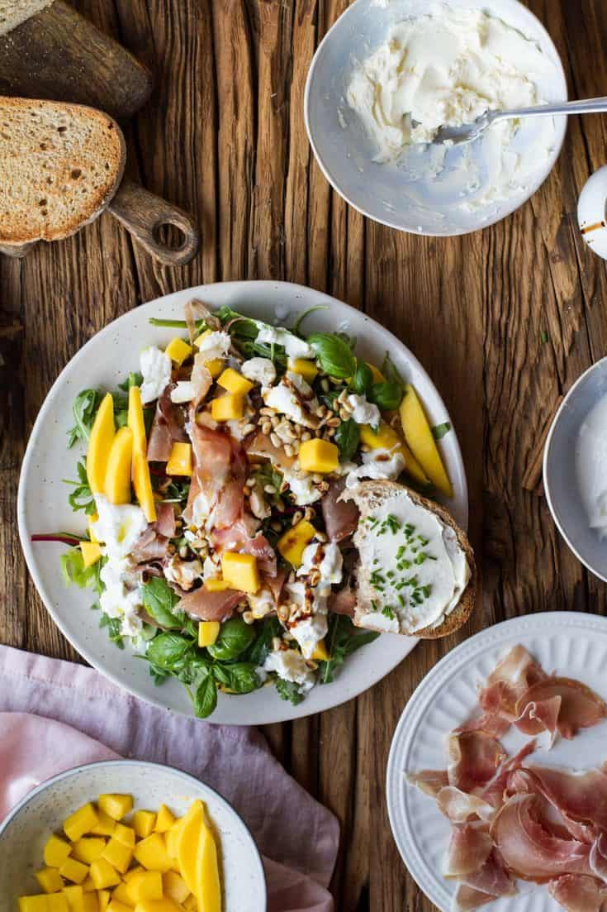

Mangų ir avokadų kaprio salotos su burrata ir prosciutto
Reikės:
- 4 pomidorų
- 2 gerai prinokusių avokadų
- 1 gerai prinokusio mango
- 100 g Prosciutto
- 2 burrata sūrių
- 3 riekių šviesios duonos
- Alyvuogių aliejaus
- Balzamiko kremo
- Citrinos sulčių
- Akmens druskos
- Pipirų
- Šviežio baziliko
Gaminame:
Duoną suplėšome gabalėliais, apšlakstome alyvuogių aliejumi ir druską, kepame 180 laipsnių orkaitėje 7 – 8 min, kol gražiai apskrunda. Pomidorus, avokadus ir mangą supjaustome panašaus storio griežinėliais / juostelėmis ir sudedame į lėkštes.Ant viršaus dedame krutonus, prosciutto ir burratą. Viską apšlakstome alyvuogių aliejumi, balzamiko kremu ir citrinos sultimis. Pabarstome druska, pipirais ir šviežio baziliko lapeliais.
Šaltinis:
Receptas - Ant medinės lentelėsNuotrauka - Ginger with spice